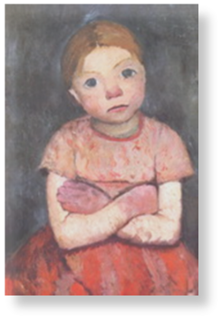

Was ist FASD?
Fetale Alkoholspektrum-Störungen (FASD)
Fetale Alkoholspektrum-Störungen (FASD) bezeichnen die vorgeburtlich entstandene Schädigung eines Kindes durch von der schwangeren Mutter konsumierten Alkohol. Das Fetale Alkohol Syndrom ist in seiner Variablität sehr vielgestaltig und reicht von ausgeprägten Verhaltens- und Lernstörungen bis hin zu schweren körperlichen und geistigen Behinderungen sowie irreparablen Schädigungen des Zentralen Nervensystems.
Allein in Deutschland werden jedes Jahr 3.000 - 4.000 Kinder mit Alkoholschädigungen verschiedener Ausprägung geboren. Damit ist dies die häufigste nichtgenetische Ursache für geistige Behinderungen – und dabei zu hundert Prozent vermeidbar.
Zu den äußerlich sichtbaren Schäden zählen Kleinwuchs, Untergewicht, Mikrozephalus und Fehlbildungen im Gesichtsbereich. Hinzu kommen oftmals Fütterstörungen, motorische Unruhe und ausgeprägte Schlafstörungen in der Säuglingszeit. Mit dem Heranwachsen neigen die Betroffenen häufig zur ADHS/ADS-Symptomatik, oft haben sie kognitive Einschränkungen und Schwierigkeiten in der sozialen Interaktion.
Jugendliche mit FASD sind kognitiv häufig stark eingeschränkt und können Bindungsunsicherheiten zeigen. Zudem haben viele Schwierigkeiten mit Regeleinhaltung und Impulsivität.
Im Erwachsenenalter sind nur wenige Betroffene in der Lage, sich selbst zu versorgen. Mehr als 80 Prozent sind ohne eine dauerhafte Beschäftigung und ohne Berufsausübung. Viele müssen lebenslang betreut werden.
Welche Alkoholmenge in welchem Schwangerschaftsstadium gefährlich ist, kann nicht mit Sicherheit gesagt werden. Nur durch den völligen Verzicht auf Alkohol während der Schwangerschaft sind angeborene Alkoholschäden mit Sicherheit vermeidbar. Trotz dieser Erkenntnis gaben in einer Studie der Charité 58 Prozent der befragten schwangeren Frauen an, gelegentlich Alkohol zu trinken.